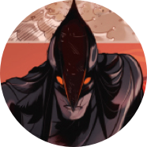
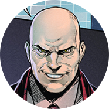
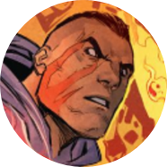
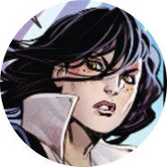
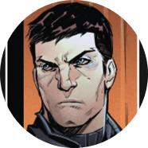
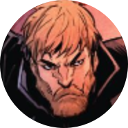

Кутх
Главный антагонист кроссовера «Время Ворона». Бог-Ворон, языческий бог хитрости и обмана, поклявшийся уничтожить православие. Выбрал своим аватаром Сергея Разумовского и воплотился в его теле.

Магистр
Могущественный чернокнижник, изначально из линейки «Инок». Тайно сотрудничает с Семиазой. Принял активное участие в возвращении Кутха. Охотится за волшебными камнями.

Свартжель
Дочь Кутха. Помогла Богу-Ворону возродиться. Обладает большой магической силой и злобным характером. Впервые появилась в линейке «Бесобой», затем действовала во «Времени Ворона». Ее останки подобрал и использовал в своих целях Антихрист.

Август ван дер Хольт
Владелец компании «HOLT International», производящей оружие. Больше всего на свете любит власть, деньги и свою младшую сестру Мико. Умеет бить людей током. Изначально герой линейки «Красная фурия». Вышел сухим из воды после гибели Кутха, подставив МакАлистера.

Данила Бесобой
Охотник на демонов и Часовой, искусственно созданный Семиазой на кургане тысячи павших воинов и получивший их силу. Долгое время был убежден, что он бывший военный, потерявший семью во время боевых действий. В его теле был заперт Сатана. Спутник Данилы — бесенок Шмыг.

Джесси Родригез
Безбашенная наемница, получающая искреннее наслаждение от вида крови, перестрелок и жестокости. Нимфоманка. После того как Джесси избила сестру Хольта, чтобы подставить Нику, вынуждена скрываться от прежнего работодателя и примкнуть к старым врагам.

Игорь Гром
Питерский следователь, борец за добро и справедливость. Проблемы предпочитает решать кулаками, хотя в уме ему тоже не откажешь. После кроссовера, повредившись психикой, уволился со службы, но продолжает вершить добро.

Андрей Радов
Тусовщик, заложивший крест деда ради покупки автомобиля. Чтобы вернуть семейную реликвию-артефакт, путешествовал во времени и поучаствовал в многочисленных войнах. Стал Иноком — защитником русской земли, однако в кроссовере утратил свои силы и былой статус. Ныне защищает все Многомирье.

Ника Чайкина
Она же Красная Фурия. Профессиональная воровка с чистым сердцем, волей судьбы ставшая сотрудницей МАК. Новообретенная команда стала для Ники семьёй, которой у девушки никогда не было, и она готова сражаться на их стороне, даже лишившись ног в схватке с Августом ван дер Хольтом.